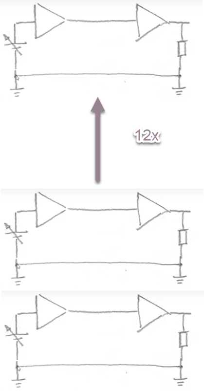

Serieel vs parallel communiceren
Stel: je moet 12 bits overdragen van zender naar ontvanger.
Parallelle communicatie
Je gebruikt 12 datalijnen (plus 1 gemeenschappelijke massa). Alle bits worden tegelijk verstuurd.

Voordeel
Snel: alle bits komen tegelijk aan.
Nadelen
- Crosstalk: signalen beïnvloeden elkaar
- Timingproblemen: bits moeten exact gelijk aankomen
- Duur: veel kabels nodig, zeker over lange afstanden
Seriële communicatie
Je gebruikt 1 datalijn (plus referentielijn). Bits worden één voor één verstuurd.

Voordelen
- Minder kabels, dus goedkoper en compacter
- Minder crosstalk
- Geschikt voor lange afstanden
- Hogere snelheden mogelijk door betere signaalintegriteit
Nadeel
Trager dan parallel, al wordt dat gecompenseerd door hogere kloksnelheden.
De praktijk
Vroeger was parallel populair, maar moderne systemen zijn bijna allemaal serieel: USB, Ethernet, SATA, PCIe, en ook RS-485.
Belangrijke conclusie
Door hogere klokfrequenties en efficiënte protocollen haalt seriële communicatie in de praktijk meer doorvoer dan parallel, met minder kans op fouten.